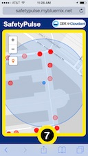
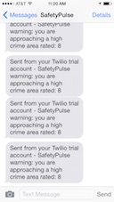

| SafetyPulse, from IBM Cloudant, is a mobile app for Boston, MA USA that constantly evaluates the safety of your surroundings to keep you out of trouble areas. The app uses crime statistics combined with your location and the direction you’re heading to gauge the safety level of where you are, and where you’ll soon be. You’ll get a gentle warning when your environment is a little risky, and when you’re heading towards a really high-crime area you get a text message so you can concentrate on where you are, instead of looking at your phone. Set it up once and forget it. SafetyPulse, running in the cloud, will always have your back. Check out the movie.
SafetyPulse is good for more than just monitoring immediate personal safety. Have your kids use it with your mobile phone number and you instantly get notified when they are in a dangerous area. Or you could use it as an aid when scouting a location for a new business. For example, in one of the provided use cases, Navtej is an aspiring restaurant owner. He's a superb chef, but doesn't understand all the business aspects of starting a restaurant. He could use SafetyPulse when looking at potential spaces for his new restaurant to tell if the area will deter customers from coming. Tourists and joggers will also appreciate this service. |

 |
|
IBM Information Management Cloudant Geo team: Raj Singh (rrsingh@us.ibm.com) Norman Barker Chris Glew |
SafetyPulse was developed with IBM BlueMix and IBM DevOps Services. It is written in Javascript and uses Node.js as a middle tier with IBM Cloudant database services with enhanced geospatial query. To determine crime rates, it uses open data provided by the City of Boston and stored in Cloudant. Crime data is harvested nightly from the City of Boston's open data service, which leverages a common open data publishing system from Socrata, so any city that uses Socrata could quickly be added to a real SafetyPulse service (note that this demo app only sends SMS messages to the developer). To communicate with users on their mobile devices, SafetyPulse uses Twillio for Bluemix to send safety alerts via SMS.
|